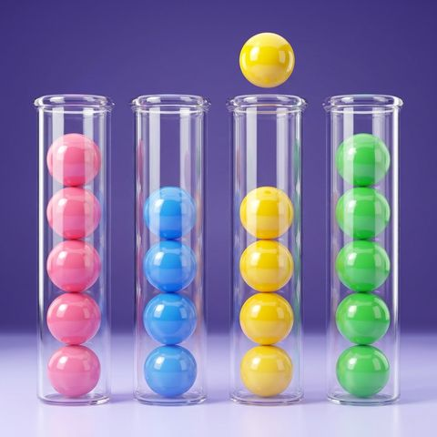
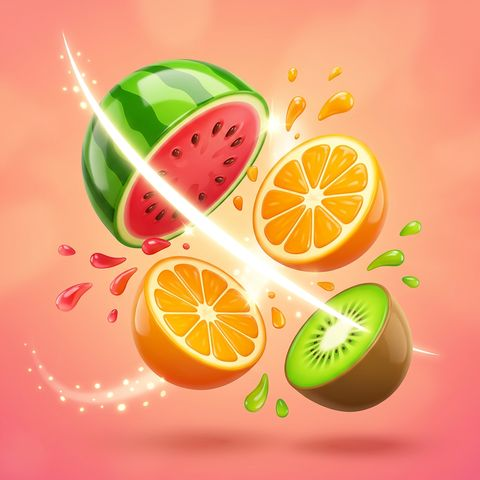
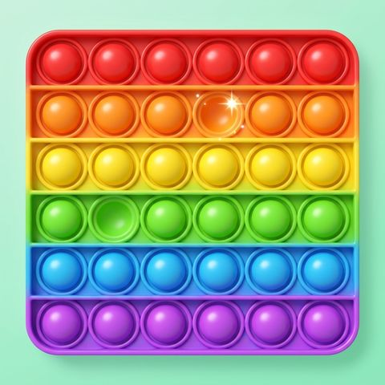
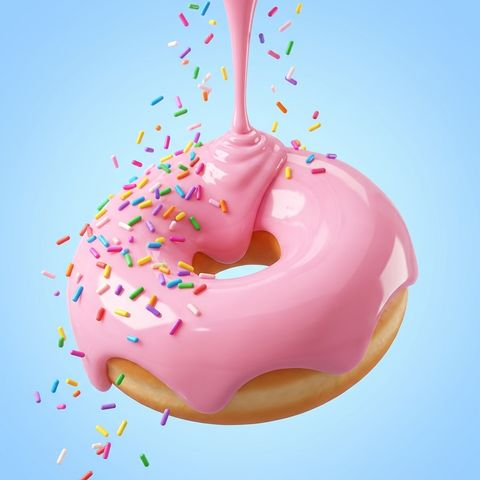
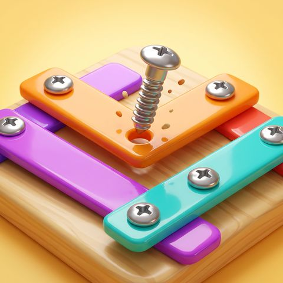

Gratuit, sur WhatsApp
Crée ton propre jeu avec l'IA, juste avec ton téléphone.
Rejoins ma chaîne WhatsApp gratuite. Je t'y montre pas à pas comment l'IA fabrique ton jeu, et comment y mettre de la publicité.
- La vidéo gratuite De l'idée au jeu en ligne, avec l'application Claude. Sans écrire de code.
- Les preuves Mes jeux, ceux de mes élèves, et ce qu'ils rapportent, captures à l'appui.
- Les réponses à tes questions Celles qu'on me pose le plus, avec mes réponses.
- Les lives TikTok Je t'annonce mes lives, où je réponds à tes questions en direct.
Gratuit. Ton numéro reste caché : ni moi ni les autres abonnés ne le voyons. Tu quittes la chaîne quand tu veux.
Des idées
Des jeux simples
et satisfaisants.
Ceux qu'on ne lâche plus. Tu décris ton idée à l'IA, elle fabrique le jeu.

Tri des billes
Tranche les fruits
Pop-it
Glaçage
Vis et boulons
Des illustrations, pour te donner des idées. Le tien, c'est toi qui l'inventes.
En vrai
Des jeux qui tournent,
pas des promesses.
Faits avec l'IA, sans une ligne de code écrite à la main.
La vidéo gratuite
t'attend dans la chaîne.
Un clic, et WhatsApp s'ouvre sur la chaîne. Tu appuies sur « Suivre », c'est tout.
Rejoindre la chaîne gratuite